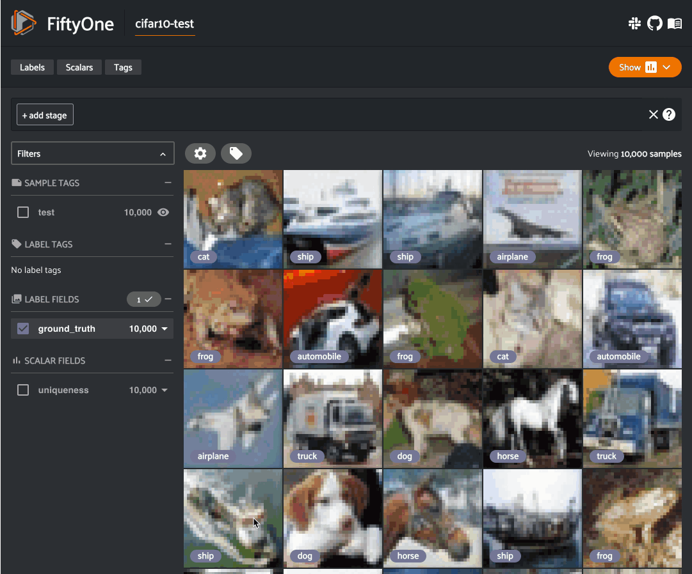

FiftyOne Brain ¶¶
The FiftyOne Brain provides powerful machine learning techniques that are designed to transform how you curate your data from an art into a measurable science.
Note
Did you know? You can execute Brain methods from the FiftyOne App by installing the @voxel51/brain plugin!
The FiftyOne Brain methods are useful across the stages of the machine learning workflow:
-
Visualizing embeddings: Tired of combing through individual images/videos and staring at aggregate performance metrics trying to figure out how to improve the performance of your model? Using FiftyOne to visualize your dataset in a low-dimensional embedding space can reveal patterns and clusters in your data that can help you answer many important questions about your data, from identifying the most critical failure modes of your model, to isolating examples of critical scenarios, to recommending new samples to add to your training dataset, and more!
-
Similarity: When constructing a dataset or training a model, have you ever wanted to find similar examples to an image or object of interest? For example, you may have found a failure case of your model and now want to search for similar scenarios in your evaluation set to diagnose the issue, or you want to mine your data lake to augment your training set to fix the issue. Use the FiftyOne Brain to index your data by similarity and you can easily query and sort your datasets to find similar examples, both programmatically and via point-and-click in the App.
-
Leaky splits: Often when sourcing data en masse, duplicates and near duplicates can slip through the cracks. The FiftyOne Brain offers a leaky splits analysis that can be used to find potential leaks between dataset splits. Such leaks can be misleading when evaluating a model, giving an overly optimistic measure for the quality of training.
-
Near duplicates: When curating massive datasets, you may inadvertently add near duplicate data to your datasets, which can bias or otherwise confuse your models. The FiftyOne Brain offers a near duplicate detection algorithm that automatically surfaces such data quality issues and prompts you to take action to resolve them.
-
Exact duplicates: Despite your best efforts, you may accidentally add duplicate data to a dataset. The FiftyOne Brain provides an exact duplicate detection method that scans your data and alerts you if a dataset contains duplicate samples, either under the same or different filenames.
-
Uniqueness: During the training loop for a model, the best results will be seen when training on unique data. The FiftyOne Brain provides a uniqueness measure for images that compare the content of every image in a dataset with all other images. Uniqueness operates on raw images and does not require any prior annotation on the data. It is hence very useful in the early stages of the machine learning workflow when you are likely asking “What data should I select to annotate?”
-
Mistakenness: Annotations mistakes create an artificial ceiling on the performance of your models. However, finding these mistakes by hand is at least as arduous as the original annotation was, especially in cases of larger datasets. The FiftyOne Brain provides a quantitative mistakenness measure to identify possible label mistakes. Mistakenness operates on labeled images and requires the logit-output of your model predictions in order to provide maximum efficacy. It also works on detection datasets to find missed objects, incorrect annotations, and localization issues.
-
Hardness: While a model is training, it will learn to understand attributes of certain samples faster than others. The FiftyOne Brain provides a hardness measure that calculates how easy or difficult it is for your model to understand any given sample. Mining hard samples is a tried and true measure of mature machine learning processes. Use your current model instance to compute predictions on unlabeled samples to determine which are the most valuable to have annotated and fed back into the system as training samples, for example.
-
Representativeness: When working with large datasets, it can be hard to determine what samples within it are outliers and which are more typical. The FiftyOne Brain offers a representativeness measure that can be used to find the most common types of images in your dataset. This is especially helpful to find easy examples to train on in your data and for visualizing common modes of the data.
Note
Check out the tutorials page for detailed examples demonstrating the use of many Brain capabilities.
Visualizing embeddings ¶¶
The FiftyOne Brain provides a powerful
compute_visualization() method
that you can use to generate low-dimensional representations of the samples
and/or individual objects in your datasets.
These representations can be visualized natively in the App’s Embeddings panel, where you can interactively select points of interest and view the corresponding samples/labels of interest in the Samples panel, and vice versa.

There are two primary components to an embedding visualization: the method used to generate the embeddings, and the dimensionality reduction method used to compute a low-dimensional representation of the embeddings.
Embedding methods ¶¶
The embeddings and model parameters of
compute_visualization()
support a variety of ways to generate embeddings for your data:
-
Provide nothing, in which case a default general purpose model is used to embed your data
-
Provide a
Modelinstance or the name of any model from the Model Zoo that supports embeddings -
Provide your own precomputed embeddings in array form
-
Provide the name of a
VectorFieldorArrayFieldof your dataset in which precomputed embeddings are stored
Dimensionality reduction methods ¶¶
The method parameter of
compute_visualization() allows
you to specify the dimensionality reduction method to use. The supported
methods are:
-
umap ( default): Uniform Manifold Approximation and Projection ( UMAP)
-
tsne: t-distributed Stochastic Neighbor Embedding ( t-SNE)
-
pca: Principal Component Analysis ( PCA)
-
manual: provide a manually computed low-dimensional representation
import fiftyone.brain as fob
results = fob.compute_visualization(
dataset,
method="umap", # "umap", "tsne", "pca", etc
brain_key="...",
...
)
Note
When you use the default UMAP method for the first time, you will be prompted to install the umap-learn package.
Note
Refer to this section for more information about creating visualization runs.
Applications ¶¶
How can embedding-based visualization of your data be used in practice? These visualizations often uncover hidden structure in you data that has important semantic meaning depending on the data you use to color/size the points.
Here are a few of the many possible applications:
-
Identifying anomalous and/or visually similar examples
-
Uncovering patterns in incorrect/spurious predictions
-
Finding examples of target scenarios in your data lake
-
Mining hard examples for your evaluation pipeline
-
Recommending samples from your data lake for classes that need additional training data
-
Unsupervised pre-annotation of training data
The best part about embedding visualizations is that you will likely discover more applications specific to your use case when you try it out on your data!
Note
Check out the image embeddings tutorial to see example uses of the Brain’s embeddings-powered visualization methods to uncover hidden structure in datasets.
Image embeddings example ¶¶
The following example gives a taste of the powers of visual embeddings in FiftyOne using the BDD100K dataset from the dataset zoo, embeddings generated by a mobilenet model from the model zoo, and the default UMAP dimensionality reduction method.
In this setup, the scatterpoints in the
Embeddings panel correspond to images in the
validation split colored by the time of day labels provided by the BDD100K
dataset. When points are lasso-ed in the plot, the corresponding samples are
automatically selected in the Samples panel:
import fiftyone as fo
import fiftyone.brain as fob
import fiftyone.zoo as foz
# The BDD dataset must be manually downloaded. See the zoo docs for details
source_dir = "/path/to/dir-with-bdd100k-files"
dataset = foz.load_zoo_dataset(
"bdd100k", split="validation", source_dir=source_dir,
)
# Compute embeddings
# You will likely want to run this on a machine with GPU, as this requires
# running inference on 10,000 images
model = foz.load_zoo_model("mobilenet-v2-imagenet-torch")
embeddings = dataset.compute_embeddings(model)
# Compute visualization
results = fob.compute_visualization(
dataset, embeddings=embeddings, seed=51, brain_key="img_viz"
)
session = fo.launch_app(dataset)
Note
Did you know? You can programmatically configure your Spaces layout!

The GIF shows the variety of insights that are revealed by running this simple protocol:
-
The first cluster of points selected reveals a set of samples whose field of view is corrupted by hardware gradients at the top and bottom of the image
-
The second cluster of points reveals a set of images in rainy conditions with water droplets on the windshield
-
Hiding the primary cluster of
daytimepoints and selecting the remainingnightpoints reveals that thenightpoints have incorrect labels
Object embeddings example ¶¶
The following example demonstrates how embeddings can be used to visualize the
ground truth objects in the quickstart dataset
using the
compute_visualization() method’s
default embeddings model and dimensionality method.
In this setup, we generate a visualization for all ground truth objects, but
then we create a view that restricts the visualization
to only objects in a subset of the classes. The scatterpoints in the
Embeddings panel correspond to objects, colored
by their label. When points are lasso-ed in the plot, the corresponding
object patches are automatically selected in the
Samples panel:
import fiftyone as fo
import fiftyone.brain as fob
import fiftyone.zoo as foz
from fiftyone import ViewField as F
dataset = foz.load_zoo_dataset("quickstart")
# Generate visualization for `ground_truth` objects
results = fob.compute_visualization(
dataset, patches_field="ground_truth", brain_key="gt_viz"
)
# Restrict to the 10 most common classes
counts = dataset.count_values("ground_truth.detections.label")
classes = sorted(counts, key=counts.get, reverse=True)[:10]
view = dataset.filter_labels("ground_truth", F("label").is_in(classes))
session = fo.launch_app(view)
Note
Did you know? You can programmatically configure your Spaces layout!
As you can see, the coloring of the scatterpoints allows you to discover natural clusters of objects, such as visually similar carrots or kites in the air.
Visualization API ¶¶
This section describes how to setup, create, and manage visualizations in detail.
Changing your visualization method ¶¶
You can use a specific dimensionality reduction method for a particular
visualization run by passing the method parameter to
compute_visualization():
index = fob.compute_visualization(..., method="<method>", ...)
Alternatively, you can change your default dimensionality reduction method for
an entire session by setting the FIFTYONE_BRAIN_DEFAULT_VISUALIZATION_METHOD
environment variable:
export FIFTYONE_BRAIN_DEFAULT_VISUALIZATION_METHOD=<method>
Finally, you can permanently change your default dimensionality reduction
method by updating the default_visualization_method key of your
brain config at ~/.fiftyone/brain_config.json:
{
"default_visualization_method": "<method>",
"visualization_methods": {
"<method>": {...},
...
}
}
Configuring your visualization method ¶¶
Dimensionality reduction methods may be configured in a variety of
method-specific ways, which you can see by inspecting the parameters of a
method’s associated VisualizationConfig class.
The relevant classes for the builtin dimensionality reduction methods are:
-
umap:
fiftyone.brain.visualization.UMAPVisualizationConfig -
tsne:
fiftyone.brain.visualization.TSNEVisualizationConfig -
pca:
fiftyone.brain.visualization.PCAVisualizationConfig -
manual:
fiftyone.brain.visualization.ManualVisualizationConfig
You can configure a dimensionality reduction method’s parameters for a specific
run by simply passing supported config parameters as keyword arguments each
time you call
compute_visualization():
index = fob.compute_visualization(
...
method="umap",
min_dist=0.2,
)
Alternatively, you can more permanently configure your dimensionality reduction method(s) via your brain config.
Similarity ¶¶
The FiftyOne Brain provides a
compute_similarity() method that
you can use to index the images or object patches in a dataset by similarity.
Once you’ve indexed a dataset by similarity, you can use the
sort_by_similarity()
view stage to programmatically sort your dataset by similarity to any image(s)
or object patch(es) of your choice in your dataset. In addition, the App
provides a convenient point-and-click interface for
sorting by similarity with respect to an index on a dataset.
Note
Did you know? You can search by natural language using similarity indexes!
Embedding methods ¶¶
Like embeddings visualization, similarity leverages deep embeddings to generate an index for a dataset.
The embeddings and model parameters of
compute_similarity() support a
variety of ways to generate embeddings for your data:
-
Provide nothing, in which case a default general purpose model is used to index your data
-
Provide a
Modelinstance or the name of any model from the Model Zoo that supports embeddings -
Provide your own precomputed embeddings in array form
-
Provide the name of a
VectorFieldorArrayFieldof your dataset in which precomputed embeddings are stored
Similarity backends ¶¶
By default, all similarity indexes are served using a builtin
scikit-learn backend, but you can pass the
optional backend parameter to
compute_similarity() to switch to
another supported backend:
-
sklearn ( default): a scikit-learn backend
-
qdrant: a Qdrant backend
-
redis: a Redis backend
-
pinecone: a Pinecone backend
-
mongodb: a MongoDB backend
-
elasticsearch: a Elasticsearch backend
-
milvus: a Milvus backend
-
lancedb: a LanceDB backend
import fiftyone.brain as fob
results = fob.compute_similarity(
dataset,
backend="sklearn", # "sklearn", "qdrant", "redis", etc
brain_key="...",
...
)
Note
Refer to this section for more information about creating, managing and deleting similarity indexes.
Image similarity ¶¶
This section demonstrates the basic workflow of:
-
Indexing an image dataset by similarity
-
Using the App’s image similarity UI to query by visual similarity
-
Using the SDK’s
sort_by_similarity()view stage to programmatically query the index
To index a dataset by image similarity, pass the Dataset or DatasetView of
interest to compute_similarity()
along with a name for the index via the brain_key argument.
Next load the dataset in the App and select some image(s). Whenever there is an active selection in the App, a similarity icon will appear above the grid, enabling you to sort by similarity to your current selection.
You can use the advanced settings menu to choose between multiple brain keys
and optionally specify a maximum number of matches to return ( k) and whether
to query by greatest or least similarity (if supported).
import fiftyone as fo
import fiftyone.brain as fob
import fiftyone.zoo as foz
dataset = foz.load_zoo_dataset("quickstart")
# Index images by similarity
fob.compute_similarity(
dataset,
model="clip-vit-base32-torch",
brain_key="img_sim",
)
session = fo.launch_app(dataset)
Note
In the example above, we specify a zoo model with which to generate embeddings, but you can also provide precomputed embeddings.

Alternatively, you can use the
sort_by_similarity()
view stage to programmatically construct a view that
contains the sorted results:
# Choose a random image from the dataset
query_id = dataset.take(1).first().id
# Programmatically construct a view containing the 15 most similar images
view = dataset.sort_by_similarity(query_id, k=15, brain_key="img_sim")
session.view = view
Note
Performing a similarity search on a DatasetView will only return
results from the view; if the view contains samples that were not included
in the index, they will never be included in the result.
This means that you can index an entire Dataset once and then perform
searches on subsets of the dataset by
constructing views that contain the images of
interest.
Note
For large datasets, you may notice longer load times the first time you use a similarity index in a session. Subsequent similarity searches will use cached results and will be faster!
Object similarity ¶¶
This section demonstrates the basic workflow of:
-
Indexing a dataset of objects by similarity
-
Using the App’s object similarity UI to query by visual similarity
-
Using the SDK’s
sort_by_similarity()view stage to programmatically query the index
You can index any objects stored on datasets in Detection, Detections,
Polyline, or Polylines format. See this section for
more information about adding labels to your datasets.
To index by object patches, simply pass the Dataset or DatasetView of
interest to compute_similarity()
along with the name of the patches field and a name for the index via the
brain_key argument.
Next load the dataset in the App and switch to object patches view by clicking the patches icon above the grid and choosing the label field of interest from the dropdown.
Now whenever you have selected one or more patches in the App, a similarity icon will appear above the grid, enabling you to sort by similarity to your current selection.
You can use the advanced settings menu to choose between multiple brain keys
and optionally specify a maximum number of matches to return ( k) and whether
to query by greatest or least similarity (if supported).
import fiftyone as fo
import fiftyone.brain as fob
import fiftyone.zoo as foz
dataset = foz.load_zoo_dataset("quickstart")
# Index ground truth objects by similarity
fob.compute_similarity(
dataset,
patches_field="ground_truth",
model="clip-vit-base32-torch",
brain_key="gt_sim",
)
session = fo.launch_app(dataset)
Note
In the example above, we specify a zoo model with which to generate embeddings, but you can also provide precomputed embeddings.

Alternatively, you can directly use the
sort_by_similarity()
view stage to programmatically construct a view that
contains the sorted results:
# Convert to patches view
patches = dataset.to_patches("ground_truth")
# Choose a random patch object from the dataset
query_id = patches.take(1).first().id
# Programmatically construct a view containing the 15 most similar objects
view = patches.sort_by_similarity(query_id, k=15, brain_key="gt_sim")
session.view = view
Note
Performing a similarity search on a DatasetView will only return
results from the view; if the view contains objects that were not included
in the index, they will never be included in the result.
This means that you can index an entire Dataset once and then perform
searches on subsets of the dataset by
constructing views that contain the objects of
interest.
Note
For large datasets, you may notice longer load times the first time you use a similarity index in a session. Subsequent similarity searches will use cached results and will be faster!
Text similarity ¶¶
When you create a similarity index powered by the CLIP model, you can also search by arbitrary natural language queries natively in the App!

You can also perform text queries via the SDK by passing a prompt directly to
sort_by_similarity()
along with the brain_key of a compatible similarity index:
Note
In general, any custom model that is made available via the
model zoo interface that implements the
PromptMixin interface can
support text similarity queries!
Similarity API ¶¶
This section describes how to setup, create, and manage similarity indexes in detail.
Changing your similarity backend ¶¶
You can use a specific backend for a particular similarity index by passing the
backend parameter to
compute_similarity():
index = fob.compute_similarity(..., backend="<backend>", ...)
Alternatively, you can change your default similarity backend for an entire
session by setting the FIFTYONE_BRAIN_DEFAULT_SIMILARITY_BACKEND environment
variable.
export FIFTYONE_BRAIN_DEFAULT_SIMILARITY_BACKEND=<backend>
Finally, you can permanently change your default similarity backend by
updating the default_similarity_backend key of your
brain config at ~/.fiftyone/brain_config.json:
{
"default_similarity_backend": "<backend>",
"similarity_backends": {
"<backend>": {...},
...
}
}
Configuring your backend ¶¶
Similarity backends may be configured in a variety of backend-specific ways,
which you can see by inspecting the parameters of a backend’s associated
SimilarityConfig class.
The relevant classes for the builtin similarity backends are:
-
sklearn:
fiftyone.brain.internal.core.sklearn.SklearnSimilarityConfig -
qdrant:
fiftyone.brain.internal.core.qdrant.QdrantSimilarityConfig -
redis:
fiftyone.brain.internal.core.redis.RedisSimilarityConfig -
pinecone:
fiftyone.brain.internal.core.pinecone.PineconeSimilarityConfig -
mongodb:
fiftyone.brain.internal.core.mongodb.MongoDBSimilarityConfig -
elasticsearch: a fiftyone.brain.internal.core.elasticsearch.ElasticsearchSimilarityConfig
-
milvus:
fiftyone.brain.internal.core.milvus.MilvusSimilarityConfig -
lancedb:
fiftyone.brain.internal.core.lancedb.LanceDBSimilarityConfig
You can configure a similarity backend’s parameters for a specific index by
simply passing supported config parameters as keyword arguments each time you
call compute_similarity():
index = fob.compute_similarity(
...
backend="qdrant",
url="http://localhost:6333",
)
Alternatively, you can more permanently configure your backend(s) via your brain config.
Creating an index ¶¶
The compute_similarity() method
provides a number of different syntaxes for initializing a similarity index.
Let’s see some common patterns on the quickstart dataset:
import fiftyone as fo
import fiftyone.brain as fob
import fiftyone.zoo as foz
dataset = foz.load_zoo_dataset("quickstart")
Default behavior ¶¶
With no arguments, embeddings will be automatically computed for all images or patches in the dataset using a default model and added to a new index in your default backend:
Custom model, custom backend, add embeddings later ¶¶
With the syntax below, we’re specifying a similarity backend of our choice,
specifying a custom model from the Model Zoo to use to
generate embeddings, and using the embeddings=False syntax to create
the index without initially adding any embeddings to it:
Precomputed embeddings ¶¶
You can pass precomputed image or object embeddings to
compute_similarity() via the
embeddings argument:
Adding embeddings to an index ¶¶
You can use
add_to_index()
to add new embeddings or overwrite existing embeddings in an index at any time:
Note
When using the default sklearn backend, you must manually call
save() after
adding or removing embeddings from an index in order to save the index to
the database. This is not required when using external vector databases
like Qdrant.
Note
Did you know? If you provided the name of a zoo model
when creating the similarity index, you can use
get_model()
to load the model later. Or, you can use
compute_embeddings()
to conveniently generate embeddings for new samples/objects using the
index’s model.
Retrieving embeddings in an index ¶¶
You can use
get_embeddings()
to retrieve the embeddings for any or all IDs of interest from an existing
index:
Removing embeddings from an index ¶¶
You can use
remove_from_index()
to delete embeddings from an index by their ID:
Note
When using the default sklearn backend, you must manually call
save() after
adding or removing embeddings from an index in order to save the index to
the database.
This is not required when using external vector databases like Qdrant.
Deleting an index ¶¶
When working with backends like Qdrant that
leverage external vector databases, you can call
cleanup() to delete
the external index/collection:
Note
Calling
cleanup() has
no effect when working with the default sklearn backend. The index is
deleted only when you call
delete_brain_run().
Applications ¶¶
How can similarity be used in practice? A common pattern is to mine your dataset for similar examples to certain images or object patches of interest, e.g., those that represent failure modes of a model that need to be studied in more detail or underrepresented classes that need more training examples.
Here are a few of the many possible applications:
-
Pruning near-duplicate images from your training dataset
-
Identifying failure patterns of a model
-
Finding examples of target scenarios in your data lake
-
Mining hard examples for your evaluation pipeline
-
Recommending samples from your data lake for classes that need additional training data
Leaky splits ¶¶
Despite our best efforts, duplicates and other forms of non-IID samples show up in our data. When these samples end up in different splits, this can have consequences when evaluating a model. It can often be easy to overestimate model capability due to this issue. The FiftyOne Brain offers a way to identify such cases in dataset splits.
The leaks of a dataset can be computed directly without the need for the
predictions of a pre-trained model via the
compute_leaky_splits() method:
import fiftyone as fo
import fiftyone.brain as fob
dataset = fo.load_dataset(...)
# Splits defined via tags
split_tags = ["train", "test"]
index = fob.compute_leaky_splits(dataset, splits=split_tags)
leaks = index.leaks_view()
# Splits defined via field
split_field = "split" # holds split values e.g. 'train' or 'test'
index = fob.compute_leaky_splits(dataset, splits=split_field)
leaks = index.leaks_view()
# Splits defined via views
split_views = {"train": train_view, "test": test_view}
index = fob.compute_leaky_splits(dataset, splits=split_views)
leaks = index.leaks_view()
Notice how the splits of the dataset can be defined in three ways: through sample tags, through a string field that assigns each split a unique value in the field, or by directly providing views that define the splits.
Input: A Dataset or DatasetView, and a definition of splits through one
of tags, a field, or views.
Output: An index that will allow you to look through your leaks with
leaks_view()
and also provides some useful actions once they are discovered such as
automatically cleaning the dataset with
no_leaks_view()
or tagging the leaks for the future action with
tag_leaks().
What to expect: Leaky splits works by embedding samples with a powerful model and finding very close samples in different splits in this space. Large, powerful models that were not trained on a dataset can provide insight into visual and semantic similarity between images, without creating further leaks in the process.
Similarity index: Under the hood, leaky splits leverages the brain’s
SimilarityIndex to detect
leaks. Any similarity backend that
implements the
DuplicatesMixin can be
used to compute leaky splits. You can either pass an existing similarity index
by passing its brain key to the argument similarity_index, or have the
method create one on the fly for you.
Embeddings: You can customize the model used to compute embeddings via the
model argument of
compute_leaky_splits(). You can
also precompute embeddings and tell leaky splits to use them by passing them
via the embeddings argument.
Thresholds: Leaky splits uses a threshold to decide what samples are
too close and thus mark them as potential leaks. This threshold can be
customized either by passing a value to the threshold argument of
compute_leaky_splits(). The best
value for your use case may vary depending on your dataset, as well as the
embeddings used. A threshold that’s too big may have a lot of false positives,
while a threshold that’s too small may have a lot of false negatives.
The example code below runs leaky splits analysis on the COCO dataset. Try it for yourself and see what you find!
import fiftyone as fo
import fiftyone.brain as fob
import fiftyone.zoo as foz
import fiftyone.utils.random as four
# Load some COCO data
dataset = foz.load_zoo_dataset("coco-2017", split="test")
# Set up splits via tags
dataset.untag_samples(dataset.distinct("tags"))
four.random_split(dataset, {"train": 0.7, "test": 0.3})
# Find leaks
index = fob.compute_leaky_splits(dataset, splits=["train", "test"])
leaks = index.leaks_view()
The
leaks_view()
method returns a view that contains only the leaks in the input splits. Once
you have these leaks, it is wise to look through them. You may gain some
insight into the source of the leaks:
session = fo.launch_app(leaks)
Before evaluating your model on your test set, consider getting a version of it
with the leaks removed. This can be easily done via
no_leaks_view():
# The original test split
test_set = index.split_views["test"]
# The test set with leaks removed
test_set_no_leaks = index.no_leaks_view(test_set)
session.view = test_set_no_leaks
Performance on the clean test set will can be closer to the performance of the model in the wild. If you found some leaks in your dataset, consider comparing performance on the base test set against the clean test set.

Near duplicates ¶¶
When curating massive datasets, you may inadvertently add near duplicate data to your datasets, which can bias or otherwise confuse your models.
The compute_near_duplicates()
method leverages embeddings to automatically surface near-duplicate samples in
your dataset:
import fiftyone as fo
import fiftyone.brain as fob
dataset = fo.load_dataset(...)
index = fob.compute_near_duplicates(dataset)
print(index.duplicate_ids)
dups_view = index.duplicates_view()
session = fo.launch_app(dups_view)
Input: An unlabeled (or labeled) dataset. There are recipes for building datasets from a wide variety of image formats, ranging from a simple directory of images to complicated dataset structures like COCO.
Output: A SimilarityIndex object that provides powerful methods such as
duplicate_ids,
neighbors_map
and
duplicates_view()
to analyze potential near duplicates as demonstrated below
What to expect: Near duplicates analysis leverages embeddings to identify samples that are too close to their nearest neighbors. You can provide pre-computed embeddings, specify a zoo model of your choice to use to compute embeddings, or provide nothing and rely on the method’s default model to generate embeddings.
Thresholds: When using custom embeddings/models, you may need to adjust the
distance threshold used to detect potential duplicates. You can do this by
passing a value to the threshold argument of
compute_near_duplicates(). The
best value for your use case may vary depending on your dataset, as well as the
embeddings used. A threshold that’s too big may have a lot of false positives,
while a threshold that’s too small may have a lot of false negatives.
The following example demonstrates how to use
compute_near_duplicates() to
detect near duplicate images on the
CIFAR-10 dataset:
import fiftyone as fo
import fiftyone.zoo as foz
dataset = foz.load_zoo_dataset("cifar10", split="test")
To proceed, we first need some suitable image embeddings for the dataset.
Although the compute_near_duplicates()
method is equipped with a default general-purpose model to generate embeddings
if none are provided, you’ll typically find higher-quality insights when a
domain-specific model is used to generate embeddings.
In this case, we’ll use a classifier that has been fine-tuned on CIFAR-10 to
pre-compute embeddings and them feed them to
compute_near_duplicates():
import fiftyone.brain as fob
import fiftyone.brain.internal.models as fbm
# Compute embeddings via a pre-trained CIFAR-10 classifier
model = fbm.load_model("simple-resnet-cifar10")
embeddings = dataset.compute_embeddings(model, batch_size=16)
# Scan for near-duplicates
index = fob.compute_near_duplicates(
dataset,
embeddings=embeddings,
thresh=0.02,
)
Finding near-duplicate samples ¶¶
The
neighbors_map
property of the index provides a data structure that summarizes the findings.
The keys of the dictionary are the sample IDs of each non-duplicate sample, and
the values are lists of (id, distance) tuples listing the sample IDs of the
duplicate samples for each reference sample together with the embedding
distance between the two samples:
print(index.neighbors_map)
{
'61143408db40df926c571a6b': [\
('61143409db40df926c573075', 5.667297674385298),\
('61143408db40df926c572ab6', 6.231051661334058)\
],
'6114340cdb40df926c577f2a': [\
('61143408db40df926c572b54', 6.042934361555487)\
],
'61143408db40df926c572aa3': [\
('6114340bdb40df926c5772e9', 5.88984758067434),\
('61143408db40df926c572b64', 6.063986454046798),\
('61143409db40df926c574571', 6.10303338363576),\
('6114340adb40df926c5749a2', 6.161749290179865)\
],
...
}
We can conveniently visualize this information in the App via the
duplicates_view()
method of the index, which constructs a view with the duplicate samples
arranged directly after their corresponding reference sample, with optional
additional fields recording the type and nearest reference sample ID/distance:
duplicates_view = index.duplicates_view(
type_field="dup_type",
id_field="dup_id",
dist_field="dup_dist",
)
session = fo.launch_app(duplicates_view)

Note
You can also use the
find_duplicates()
method of the index to rerun the duplicate detection with a different
threshold without calling
compute_near_duplicates()
again.
Finding maximally unique samples ¶¶
You can also use the
find_unique()
method of the index to identify a set of samples of any desired size that are
maximally unique with respect to each other:
# Use the similarity index to identify 500 maximally unique samples
index.find_unique(500)
print(index.unique_ids[:5])
We can also conveniently visualize the results of this operation via the
visualize_unique()
method of the index, which generates a scatterplot with the unique samples
colored separately:
# Generate a 2D visualization
viz_results = fob.compute_visualization(dataset, embeddings=embeddings)
# Visualize the unique samples in embeddings space
plot = index.visualize_unique(viz_results)
plot.show(height=800, yaxis_scaleanchor="x")

And of course we can load a view containing the unique samples in the App to explore the results in detail:
# Visualize the unique images in the App
unique_view = dataset.select(index.unique_ids)
session = fo.launch_app(view=unique_view)

Exact duplicates ¶¶
Despite your best efforts, you may accidentally add duplicate data to a dataset. Left unmitigated, such quality issues can bias your models and confound your analysis.
The compute_exact_duplicates()
method scans your dataset and determines if you have duplicate data either
under the same or different filenames:
import fiftyone as fo
import fiftyone.brain as fob
dataset = fo.load_dataset(...)
duplicates_map = fob.compute_exact_duplicates(dataset)
print(duplicates_map)
Input: An unlabeled (or labeled) dataset. There are recipes for building datasets from a wide variety of image formats, ranging from a simple directory of images to complicated dataset structures like COCO.
Output: A dictionary mapping IDs of samples with exact duplicates to lists of IDs of the duplicates for the corresponding sample
What to expect: Exact duplicates analysis uses filehases to identify duplicate data, regardless of whether they are stored under the same or different filepaths in your dataset.
Image uniqueness ¶¶
The FiftyOne Brain allows for the computation of the uniqueness of an image, in comparison with other images in a dataset; it does so without requiring any model from you. One good use of uniqueness is in the early stages of the machine learning workflow when you are deciding what subset of data with which to bootstrap your models. Unique samples are vital in creating training batches that help your model learn as efficiently and effectively as possible.
The uniqueness of a Dataset can be computed directly without need the
predictions of a pre-trained model via the
compute_uniqueness() method:
import fiftyone as fo
import fiftyone.brain as fob
dataset = fo.load_dataset(...)
fob.compute_uniqueness(dataset)
Input: An unlabeled (or labeled) image dataset. There are recipes for building datasets from a wide variety of image formats, ranging from a simple directory of images to complicated dataset structures like COCO.
Note
Did you know? Instead of using FiftyOne’s default model to generate
embeddings, you can provide your own embeddings or specify a model from the
Model Zoo to use to generate embeddings via the optional
embeddings and model argument to
compute_uniqueness().
Output: A scalar-valued uniqueness field is populated on each sample
that ranks the uniqueness of that sample (higher value means more unique).
The uniqueness values for a dataset are normalized to [0, 1], with the most
unique sample in the collection having a uniqueness value of 1.
You can customize the name of this field by passing the optional
uniqueness_field argument to
compute_uniqueness().
What to expect: Uniqueness uses a tuned algorithm that measures the
distribution of each Sample in the Dataset. Using this distribution, it
ranks each sample based on its relative similarity to other samples. Those
that are close to other samples are not unique whereas those that are far from
most other samples are more unique.
Note
Did you know? You can specify a region of interest within each image to use
to compute uniqueness by providing the optional roi_field argument to
compute_uniqueness(), which
contains Detections or Polylines that define the ROI for each sample.
Note
Check out the uniqueness tutorial to see an example use case of the Brain’s uniqueness method to detect near-duplicate images in a dataset.

Label mistakes ¶¶
Label mistakes can be calculated for both classification and detection datasets.

Sample hardness ¶¶
During training, it is useful to identify samples that are more difficult for a model to learn so that training can be more focused around these hard samples. These hard samples are also useful as seeds when considering what other new samples to add to a training dataset.
In order to compute hardness, all you need to do is add your model predictions
and their logits to your FiftyOne Dataset and then run the
compute_hardness() method:
import fiftyone as fo
import fiftyone.brain as fob
dataset = fo.load_dataset(...)
fob.compute_hardness(dataset, "predictions")
Input: A Dataset or DatasetView on which predictions have been
computed and are stored in the "predictions" argument. Ground truth
annotations are not required for hardness.
Output: A scalar-valued hardness field is populated on each sample that
ranks the hardness of the sample. You can customize the name of this field via
the hardness_field argument of
compute_hardness().
What to expect: Hardness is computed in the context of a prediction model. The FiftyOne Brain hardness measure defines hard samples as those for which the prediction model is unsure about what label to assign. This measure incorporates prediction confidence and logits in a tuned model that has demonstrated empirical value in many model training exercises.
Note
Check out the classification evaluation tutorial to see example uses of the Brain’s hardness method to uncover annotation mistakes in a dataset.

Image representativeness ¶¶
During the early stages of the ML workflow it can be useful to find prototypical samples in your data that accurately describe all the different aspects of your data. FiftyOne Brain provides a representativeness method that finds samples which are very similar to large clusters of your data. Highly representative samples are great for finding modes or easy examples in your dataset.
The representativeness of a Dataset can be computed directly without the need
for the predictions of a pre-trained model via the
compute_representativeness()
method:
import fiftyone as fo
import fiftyone.brain as fob
dataset = fo.load_dataset(...)
fob.compute_representativeness(dataset)
Input: An unlabeled (or labeled) image dataset. There are recipes for building datasets from a wide variety of image formats, ranging from a simple directory of images to complicated dataset structures like COCO.
Output: A scalar-valued representativeness field is populated for each
sample that ranks the representativeness of that sample (higher value means
more representative). The representativeness values for a dataset are
normalized to [0, 1], with the most representative samples in the collection
having a representativeness value of 1.
You can customize the name of this field by passing the optional
representativeness_field argument to
compute_representativeness()
.
What to expect: Representativeness uses a clustering algorithm to find similar looking groups of samples. The representativeness is then computed based on each sample’s proximity to the computed cluster centers, farther samples being less representative and closer samples being more representative.
Note
Did you know? You can specify a region of interest within each image to use
to compute representativeness by providing the optional roi_field
argument to
compute_representativeness(),
which contains Detections or Polylines that define the ROI for each
sample.

Managing brain runs ¶¶
When you run a brain method with a brain_key argument, the run is recorded
on the dataset and you can retrieve information about it later, rename it,
delete it (along with any modifications to your dataset that were performed by
it), and even retrieve the view that you computed on using the following
methods on your dataset:
The example below demonstrates the basic interface:
import fiftyone as fo
import fiftyone.brain as fob
import fiftyone.zoo as foz
dataset = foz.load_zoo_dataset("quickstart")
view = dataset.take(100)
# Run a brain method that returns results
results = fob.compute_visualization(view, brain_key="visualization")
# Run a brain method that populates a new sample field on the dataset
fob.compute_uniqueness(view)
# List the brain methods that have been run
print(dataset.list_brain_runs())
# ['visualization', 'uniqueness']
# Print information about a brain run
print(dataset.get_brain_info("visualization"))
# Load the results of a previous brain run
also_results = dataset.load_brain_results("visualization")
# Load the view on which a brain run was performed
same_view = dataset.load_brain_view("visualization")
# Rename a brain run
dataset.rename_brain_run("visualization", "still_visualization")
# Delete brain runs
# This will delete any stored results and fields that were populated
dataset.delete_brain_run("still_visualization")
dataset.delete_brain_run("uniqueness")
Brain config ¶¶
FiftyOne provides a brain config that you can use to either temporarily or permanently configure the behavior of brain methods.
Viewing your config ¶¶
You can print your current brain config at any time via the Python library and the CLI:
Note
If you have customized your brain config via any of the methods described below, printing your config is a convenient way to ensure that the changes you made have taken effect as you expected.
Modifying your config ¶¶
You can modify your brain config in a variety of ways. The following sections describe these options in detail.
Order of precedence ¶¶
The following order of precedence is used to assign values to your brain config settings as runtime:
-
Config settings applied at runtime by directly editing
fiftyone.brain.brain_config -
FIFTYONE_BRAIN_XXXenvironment variables -
Settings in your JSON config (
~/.fiftyone/brain_config.json) -
The default config values
Editing your JSON config ¶¶
You can permanently customize your brain config by creating a
~/.fiftyone/brain_config.json file on your machine. The JSON file may contain
any desired subset of config fields that you wish to customize.
For example, the following config JSON file customizes the URL of your Qdrant server without changing any other default config settings:
{
"similarity_backends": {
"qdrant": {
"url": "http://localhost:8080"
}
}
}
When fiftyone.brain is imported, any options from your JSON config are merged
into the default config, as per the order of precedence described above.
Note
You can customize the location from which your JSON config is read by
setting the FIFTYONE_BRAIN_CONFIG_PATH environment variable.
Setting environment variables ¶¶
Brain config settings may be customized on a per-session basis by setting the
FIFTYONE_BRAIN_XXX environment variable(s) for the desired config settings.
The FIFTYONE_BRAIN_DEFAULT_SIMILARITY_BACKEND environment variable allows you
to configure your default similarity backend:
export FIFTYONE_BRAIN_DEFAULT_SIMILARITY_BACKEND=qdrant
Similarity backends
You can declare parameters for specific similarity backends by setting
environment variables of the form
FIFTYONE_BRAIN_SIMILARITY_<BACKEND>_<PARAMETER>. Any settings that you
declare in this way will be passed as keyword arguments to methods like
compute_similarity() whenever the
corresponding backend is in use. For example, you can configure the URL of your
Qdrant server as follows:
export FIFTYONE_BRAIN_SIMILARITY_QDRANT_URL=http://localhost:8080
The FIFTYONE_BRAIN_SIMILARITY_BACKENDS environment variable can be set to a
list,of,backends that you want to expose in your session, which may exclude
native backends and/or declare additional custom backends whose parameters are
defined via additional config modifications of any kind:
export FIFTYONE_BRAIN_SIMILARITY_BACKENDS=custom,sklearn,qdrant
When declaring new backends, you can include * to append new backend(s)
without omitting or explicitly enumerating the builtin backends. For example,
you can add a custom similarity backend as follows:
export FIFTYONE_BRAIN_SIMILARITY_BACKENDS=*,custom
export FIFTYONE_BRAIN_SIMILARITY_CUSTOM_CONFIG_CLS=your.custom.SimilarityConfig
Visualization methods
You can declare parameters for specific visualization methods by setting
environment variables of the form
FIFTYONE_BRAIN_VISUALIZATION_<METHOD>_<PARAMETER>. Any settings that you
declare in this way will be passed as keyword arguments to methods like
compute_visualization() whenever
the corresponding method is in use. For example, you can suppress logging
messages for the UMAP method as follows:
export FIFTYONE_BRAIN_VISUALIZATION_UMAP_VERBOSE=false
The FIFTYONE_BRAIN_VISUALIZATION_METHODS environment variable can be set to a
list,of,methods that you want to expose in your session, which may exclude
native methods and/or declare additional custom methods whose parameters are
defined via additional config modifications of any kind:
export FIFTYONE_BRAIN_VISUALIZATION_METHODS=custom,umap,tsne
When declaring new methods, you can include * to append new method(s)
without omitting or explicitly enumerating the builtin methods. For example,
you can add a custom visualization method as follows:
export FIFTYONE_BRAIN_VISUALIZATION_METHODS=*,custom
export FIFTYONE_BRAIN_VISUALIZATION_CUSTOM_CONFIG_CLS=your.custom.VisualzationConfig
Modifying your config in code ¶¶
You can dynamically modify your brain config at runtime by directly
editing the fiftyone.brain.brain_config object.
Any changes to your brain config applied via this manner will immediately
take effect in all subsequent calls to fiftyone.brain.brain_config during
your current session.
import fiftyone.brain as fob
fob.brain_config.default_similarity_backend = "qdrant"
fob.brain_config.default_visualization_method = "tsne"